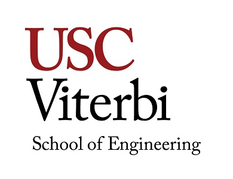

The Viterbi School of Engineering (formerly the USC School of Engineering) is located at the University of Southern California in the United States. It was renamed following a $52 million donation by Andrew Viterbi. The USC Viterbi School of Engineering celebrated its 100th birthday in conjunction with the university’s 125th birthday.
With over $135 million in external funding support, the school is among the nation’s highest in volume of research activity. The Viterbi School of Engineering is currently ranked No. 9 nationally by U.S. News and World Report.
The school is headed by Dean Yannis Yortsos. Its research centers have played a major role in development of multiple technologies, including early development of the Internet when USC researcher Jonathan Postel was an editor of communications-protocol for the fledgling internet, also known as ARPANET. The school’s faculty includes Irving Reed, Leonard Adleman, Solomon W. Golomb, Barry Boehm, Clifford Newman, Richard Bellman, Lloyd Welch, Alexander Sawchuk, and George V. Chilingar.